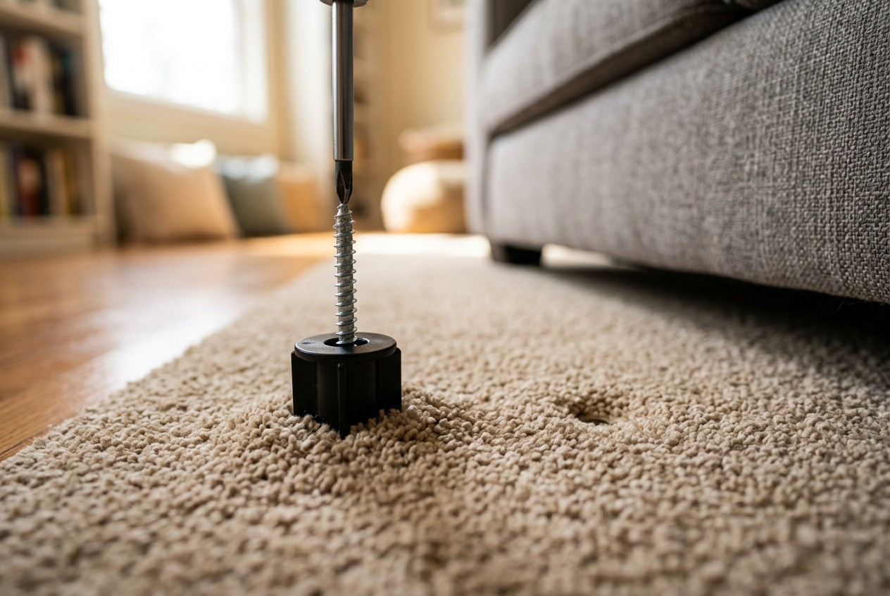
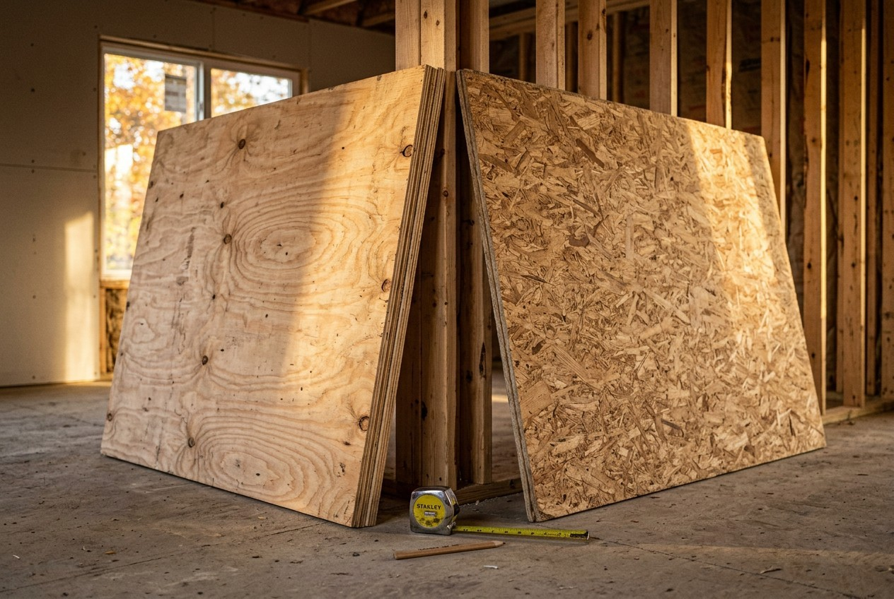
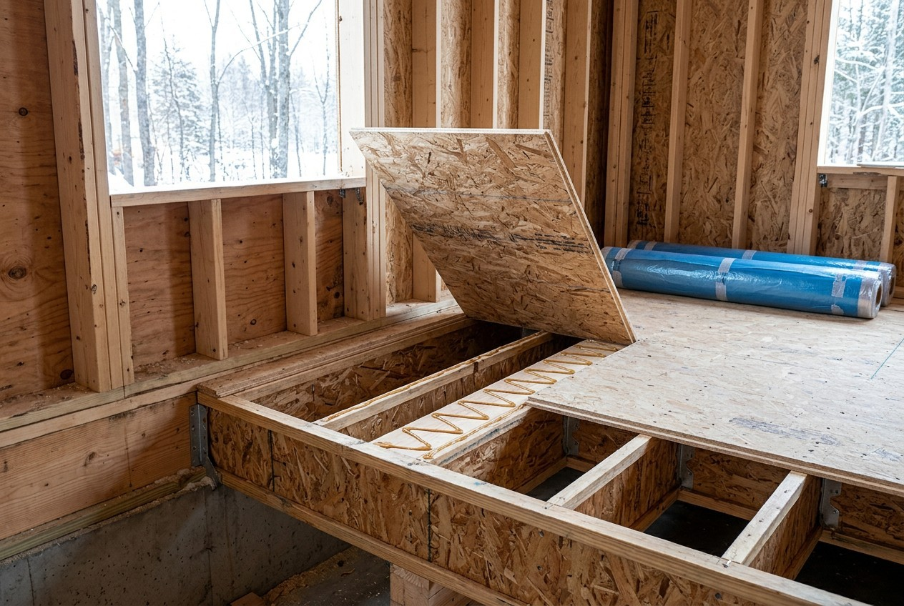

By the Editorial Team | Published: July 2026 | Last Updated: July 2026
A Squeak Is Movement Wearing a Disguise
Every floor squeak is the same event at heart: two pieces of the floor system moving against each other under load. Wood against a nail shank, panel against joist, board edge against board edge, even duct metal against framing - the squeal is friction announcing that something is no longer held tight. That's genuinely good news, because it means squeaks are mechanical problems with mechanical fixes, not mysteries. The craft is locating which two parts are moving, then choosing the fix that stops that specific movement permanently instead of muffling it for a season.

Why Floors Start Squeaking
New construction squeaks are usually born in the first heating season. Framing lumber leaves the yard with more moisture than a heated house allows and shrinks as it dries; nails that gripped tight in damp wood are left standing slightly proud in shrunken holes, and the panel now slides a hair up and down the shank with every footstep - the classic nail-squeak chirp. Decks installed without construction adhesive squeak soonest, which is why glued-and-screwed is the standard the good crews never skip.
Older floors add their own causes: seasonal humidity cycles that open gaps between panel and joist, joists with crown or twist that leave voids beneath the deck, hardwood boards rubbing their neighbors as they move, stairs whose treads work loose from wedges, and remodels that cut framing and left it under-supported. Occasionally the squeak isn't wood at all - plumbing rubbing a hole in a joist, or ductwork clicking against a strap - which is why diagnosis starts with ears, not tools.
Finding the Source
The reliable method takes two people: one walks the noisy zone slowly while the other listens - from below if a basement or crawlspace allows, which turns a mystery into a visual. Watch the subfloor from underneath while the walker rocks on the spot: movement, gaps at joists, and proud nails become visible. From above, marking the squeak's exact footprint with tape and finding the joists on either side sets up every fix that follows. The distinction worth making early is squeak versus structure: noise with noticeable bounce or a sagging line in the floor is a stiffness problem wearing a squeak costume, and it gets a framing answer, not a fastener.
The Fix Toolkit
| Squeak type | Fix | How it works |
|---|---|---|
| Panel moving on joist (access below) | Screw up through joist into deck; adhesive in gaps | Clamps panel to joist; glue fills the void that allowed motion |
| Gap between joist and deck | Glued shim, snug not driven | Fills the void; over-driving lifts the floor and makes new squeaks |
| No access below, carpet above | Breakaway screw kits through the carpet | Screw seats deck to joist, head snaps off below surface |
| Hardwood boards rubbing | Powdered graphite/talc in seams; angled trim screw for loose board | Lubricates edge friction; re-anchors the mover |
| Stair treads | Re-glue wedges, screw tread to riser and stringer | Restores the clamping the stair was built with |
| Bounce with the noise | Blocking, sistering, or bridging between joists | Adds stiffness; the squeak was a symptom |
Across every row the theme repeats: stop the movement, don't silence the sound. Lubricants and squirt-foam mufflers treat the noise and leave the motion - and moving fasteners keep enlarging their holes until the squeak returns with friends.
The Prevention Story
Everything in the fix column exists because something was skipped on installation day. The prevention list is short and unglamorous: subfloor adhesive on every joist, ring-shank nails or screws on the full schedule, panels gapped and dry before finish floors seal them, joist crowns planed and voids shimmed during framing, and finish floors installed only after the deck has been walked, refastened, and quieted. Ten minutes with screws before flooring day prevents the access problem that makes the same fix cost hours later - one more argument that the preparation stage is where floor quality is actually decided.

Are floor squeaks a sign of structural danger?
Almost never by themselves - squeaks are surface friction, not failure. The exceptions announce themselves differently: noticeable bounce, visible sag, cracked finishes above a beam line. Noise plus those symptoms means have the framing looked at; noise alone means fasteners.
Why does my floor only squeak in winter?
Heated indoor air is dry, wood shrinks, and joints that were snug all summer open just enough to move. Seasonal squeaks are the most common kind, and a whole-house humidification level that keeps wood in a narrower moisture band quiets many of them - the rest want screws.
Can squeaks be fixed without pulling up the flooring?
Usually. From below, screws and shims solve most cases invisibly. From above, breakaway-screw kits work through carpet, and finished floors accept angled trim-head screws in seams with filled, nearly invisible holes. Full disassembly is the last resort, not the first.
What is the "glued and screwed" standard?
Construction adhesive beaded on every joist before panels land, then ring-shank nails or screws on the manufacturer's fastening schedule. The glue bonds panel to joist so they move as one; the threaded fasteners resist the withdrawal that smooth nails allow. Decks built this way rarely develop the classic squeaks.

Do new houses squeak more than old ones?
They squeak earlier - the first heating season dries fresh framing and reveals every skipped bead of glue. Old houses squeak differently: accumulated seasonal cycles, settled framing, and decades of fastener wear. Same physics, different birthdays.
Why did a squeak come back after it was fixed?
Either the fix muffled instead of immobilized - lubricant wears off, foam compresses - or the screw missed the joist and grabbed only decking. A returning squeak is instructions to find the actual moving joint, which is why watching from below during a walk test beats guessing from above.
Should squeaks be fixed before installing new flooring?
Always - it is the single cheapest moment the problem will ever have. The deck is exposed, every fastener is reachable, and an hour of refastening disappears under the new floor. The same squeak discovered afterward costs access, patching, and sometimes the new floor itself.
Subfloors and Underlayment: What's Beneath Every Finished Floor